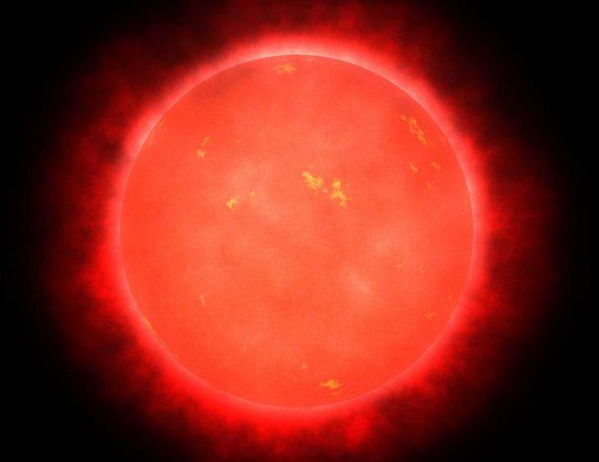
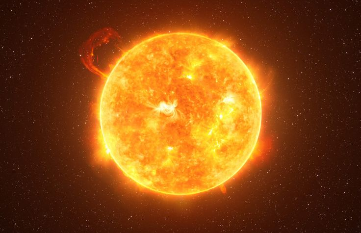
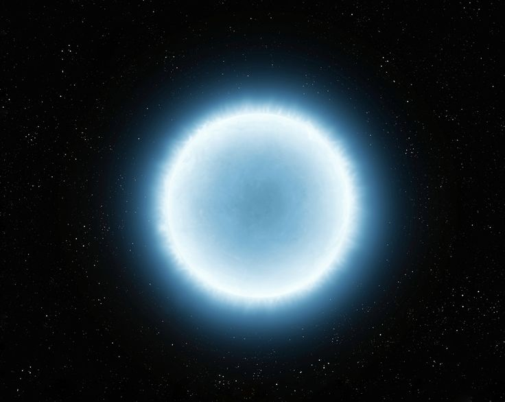
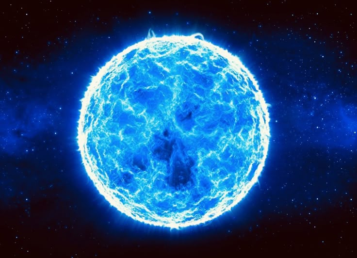
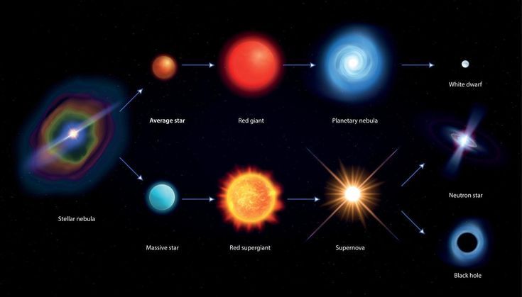

ASTRONOMY 101
Bintang

Apa Itu Bintang?
Bintang adalah bola gas raksasa yang sangat panas dan menghasilkan cahaya serta energi sendiri. Sebagian besar bintang tersusun terutama dari hidrogen dan helium.
Energi yang dihasilkan bintang berasal dari proses fusi nuklir yang terjadi di bagian intinya. Dalam proses ini, hidrogen bergabung membentuk helium dan menghasilkan energi dalam jumlah yang sangat besar.
Bintang memiliki ukuran, massa, suhu, dan warna yang berbeda-beda. Matahari yang menjadi pusat Tata Surya kita juga merupakan sebuah bintang.
Bagaimana Bintang Terbentuk?
Bintang terbentuk dari awan gas dan debu di ruang angkasa yang disebut nebula. Gravitasi menyebabkan material tersebut berkumpul dan semakin padat hingga suhu di pusatnya menjadi sangat tinggi.
Ketika material terus berkumpul, terbentuklah sebuah protobintang atau protostar. Suhu dan tekanan di bagian pusat terus meningkat. Jika kondisinya sudah cukup panas dan padat, fusi nuklir mulai berlangsung.
Saat fusi nuklir menjadi sumber energi utama, bintang memasuki tahap yang disebut main sequence. Sebagian besar kehidupan sebuah bintang berlangsung pada tahap ini.
Jenis-Jenis Bintang
Bintang dapat memiliki karakteristik yang berbeda berdasarkan massa, ukuran, temperatur, warna, dan tahap kehidupannya. Berikut beberapa jenis bintang yang menarik untuk dikenali.
Bintang Katai Merah

Bintang katai merah atau red dwarf merupakan bintang yang berukuran relatif kecil dan memiliki temperatur permukaan yang lebih rendah dibandingkan banyak bintang lainnya. Bintang ini terlihat kemerahan karena temperaturnya yang relatif rendah.
Red dwarf merupakan salah satu jenis bintang yang sangat umum ditemukan di galaksi kita. Karena menggunakan bahan bakarnya dengan sangat lambat, bintang jenis ini dapat bertahan dalam waktu yang sangat panjang.
Bintang Katai Kuning

Bintang katai kuning atau yellow dwarf merupakan bintang berukuran sedang dengan temperatur permukaan yang berada di antara bintang yang sangat panas dan sangat dingin.
Matahari merupakan contoh bintang katai kuning. Matahari saat ini berada dalam tahap main sequence dan menghasilkan energi melalui fusi hidrogen di dalam intinya.
Bintang Katai Putih

Bintang katai putih atau white dwarf merupakan sisa inti sebuah bintang setelah bintang tersebut melewati tahap tertentu dalam kehidupannya. Ukurannya relatif kecil, tetapi memiliki kepadatan yang sangat tinggi.
White dwarf tidak lagi melakukan fusi hidrogen seperti bintang pada tahap main sequence. Namun, objek ini masih dapat terlihat bercahaya karena memiliki suhu yang sangat tinggi dan perlahan akan mendingin selama waktu yang sangat panjang.
Bintang Raksasa Biru

Bintang raksasa biru atau blue giant merupakan bintang yang sangat panas, besar, dan terang. Warna kebiruannya menunjukkan bahwa temperatur permukaannya sangat tinggi.
Karena memiliki massa yang besar, bintang jenis ini menggunakan bahan bakarnya dengan sangat cepat. Akibatnya, masa hidupnya jauh lebih singkat dibandingkan bintang bermassa kecil.
Warna dan Temperatur Bintang
Warna bintang berkaitan dengan temperatur permukaannya. Secara umum, bintang yang tampak biru memiliki temperatur yang lebih tinggi, sedangkan bintang yang tampak merah memiliki temperatur yang lebih rendah.
Bintang yang tampak putih atau kekuningan berada di antara keduanya. Dengan mempelajari warna dan spektrum cahaya bintang, astronom dapat mengetahui berbagai informasi mengenai temperatur dan karakteristik bintang tersebut.
Siklus Hidup Bintang
Bintang tidak hidup selamanya. Setiap bintang mengalami berbagai tahap dalam kehidupannya, mulai dari terbentuk di dalam nebula hingga mencapai akhir kehidupannya.
Setelah terbentuk, bintang memasuki tahap main sequence. Pada tahap ini, bintang menghasilkan energi melalui fusi hidrogen di dalam inti. Lama tahap ini bergantung pada massa bintang.
Ketika bahan bakar hidrogen mulai berkurang, bintang mengalami perubahan. Bintang seperti Matahari akan berkembang menjadi red giant sebelum akhirnya meninggalkan inti yang menjadi white dwarf.
Sementara itu, bintang yang jauh lebih masif dapat mengalami ledakan supernova pada akhir kehidupannya. Sisa dari ledakan tersebut dapat membentuk objek yang sangat padat seperti neutron star atau black hole.

⭐ FUN FACT
Matahari adalah sebuah bintang. Matahari terlihat jauh lebih besar dibandingkan bintang lain karena jaraknya jauh lebih dekat dengan Bumi.